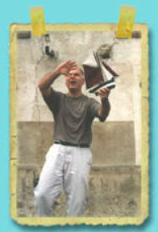

BIOGRAPHIE
Eric Viennot est né le 10 mars 1960 à Lyon.
Plasticien de formation, il a réalisé de nombreuses installations multimédia dans les années 80 au cours de différentes expositions en Europe, au sein du groupe Equipage 10.
Professeur d’arts plastiques, il a enseigné pendant plusieurs années en collège et à l’Université Paris I, avant de créer le studio de création Lexis Numérique qu’il dirige avec José Sanchis depuis 1990.
En tant que directeur artistique, il a collaboré à de nombreux projets d’édition de livres d’images ou de CD-Roms pour des éditeurs tels que Hachette, Nathan, Armand Colin, TLC Edusoft, Emme Interactive et BMG Interactive.
Il puise son inspiration dans la littérature mais aussi dans le cinéma (notamment Chaplin, Ozu, Wenders, et les français Renoir, Tati, Truffaut).
Eric Viennot est décédé en 2022 à l'âge de 62 ans. Ce site lui est dédié.
